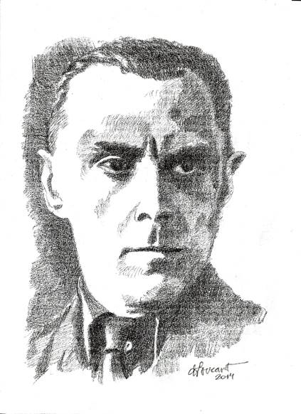
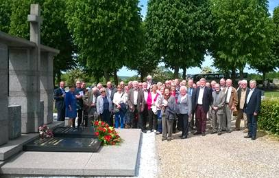

> nieuwsbrief > JAAR - nr NR
Inhoud
Hernieuwen
ledenbijdrage voor 2015
Enkele leden van 2014 – het jaar van de grote
Fotobiografie over Joris van Severen en zijn beweging – lieten
tot nog toe na hun bijdrage voor 2015 te vernieuwen. Ondertussen
verscheen al ons Jaarboek 2015 (waarover verder in deze Nieuwsbrief meer. De
bijdrage voor het lopend jaar (inclusief
jaarboek en Nieuwsbrief)
beloopt 29 €. We rekenen alsnog op hun bijdrage voor 2015.
Facebookprofiel
Dank zij de goede zorgen van onze ondervoorzitter Ruud
Bruijns, beschikt het Studiecentrum Joris van Severen – naast de
website www.jorisvanseveren.org
– thans ook over een Facebookprofiel. Mocht je op dat medium
actief zijn, laat niet na je vrienden te wijzen op onze
aanwezigheid daar en ons een bezoek te brengen, teneinde op de
hoogte te blijven van onze activiteiten. Hieronder de ‘link’:
https://www.facebook.com/studiecentrumjorisvanseveren
Herdenkingen
2015
Verderop in deze Nieuwsbrief leest u het
‘gesproken woord’ naar aanleiding van de herdenkingsmomenten,
respectievelijk te Brugge en te Abbeville.
In dit nummer vanzelfsprekend ook een blik op de
inhoud van ons 19e Jaarboek Joris van Severen, dat
medio de meimaand verschijnt.
Ten geleide bij het 19e Jaarboek Joris van Severen
Maurits
Cailliau
Ons 6e colloquium zal de
aanwezigen nog lang heugen – niet het minst omwille van de
laag-bij-de-grondse persheisa errond – waar bij notabene met
geen woord werd gerept over de inhoudelijke draagwijdte van het
colloquium, maar des temeer aan platvloerse partijpolitieke
stemmingmakerij gedaan werd. Koenraad Degroote, de Wakkense
burgemeester en onze gastheer, wist dit onwaardig gedoe
overigens even passend als flegmatiek te pareren.
Van een aanmerkelijk
hoger niveau getuigden ook de gedachten-wisselingen n.a.v. de
referaten, waarbij het o.m. ging over de vraag in hoeverre het
Verdinaso een “fascistische” beweging was, zoals Tom Cobbaert ze
genoemd had in zijn referaat. Een term die Van Severen nooit in
de mond genomen had om zijn beweging te karakteriseren, stelde
Luc Pauwels. Van Severen had overigens een klare lijn getrokken
toen hij de grens aldus verwoorde: “Fascisme: primauteit van de
Staat; Nationaalsocialisme: primauteit van het ras;
Nationaalsolidarisme: primauteit van de persoon.” Een wereld van
verschil!
Laten we overigens niet
vergeten dat het fascisme in de jaren van het interbellum weinig
te maken had met het hedendaagse container-begrip met die naam.
Toen was het – met zijn corporatistische alternatieven - veeleer
een algemeen aanvaarde politieke optie naast andere, bij het
zoeken naar een “derde weg” tegen de uitwassen van een
ongebreideld liberalisme en de ontsporingen van het marxisme.
In dit 19e jaarboek
komen we uitgebreid terug op het colloquium: naast de inleiding
van Vik Eggermont brengen we de integrale referaatteksten van
Luc Pauwels over Joris
van Severen in het brede Europees perspectief, en van Tom
Cobbaert over Diets en
Europees? Een onderzoek naar de Europese gedachte bij het
Verdinaso.
Het laatste kwartaal van
1920 van het Dagboek
Joris van Severen bleef nog ongepubliceerd. We brengen
het in dit jaarboek en leren daaruit hoe sensibel de auteur
voelde en handelde en met welke problemen en struikelstenen hij,
zowel als gevoelsmens als in zijn rol als medespeler in de
Vlaamse Beweging, te maken kreeg. 1920 is trouwens het jaar
waarin hij eindelijk een lang gekoesterde droom kon
verwezenlijken: de uitgave van zijn tijdschrift Ter Waarheid.
In zijn bijdrage Een lastig
verkiezingsjaar. Joris van Severen 1925, brengt Romain
Vanlandschoot een volgend luik van zijn verfijnde biografie.
Daarbij heeft hij, naast de electorale bekommernissen van die
dagen, ook volop aandacht voor de geestelijke evolutie die Joris
van Severen doormaakte. Volgens de auteur – en wie zal hem
tegenspreken? – is dat jaar beslissend geweest in Van Severens
omslag, waarbij hij zijn geloof in de parlementaire democratie
verloor en definitief koos voor een autoritair maatschappelijk
concept.
Luc Delafortrie,
stammend uit een Daensistisch geslacht, heeft in het Verdinaso
een belangrijke rol gespeeld. In Verdinaso en Collaboratie –
mijn aandeel schetst hij de gebeurtenissen van die
‘wondere zomer van ’40’, toen zijn beweging, onthoofd door de
moord op haar leider, ontredderd achterbleef en door de Duitse
bezetter in een hoek gedreven werd die niet de hare was. Heel
even heeft hij dan – tegen de SS in – de kant van de
VNV-Eenheidsbeweging gekozen. Maar al vlug bleek die keuze hem
al even nefast. Zijn ontslagbrief aldaar – Luc Delafortrie versus het
VNV - vormt een tijdsdocument op zich.
Van Antoon van Severen,
de auteur van de tweeledige studie Joris van Severen. Het
verhaal van een leven, brengen we het merkwaardige essay Joris van Severen en de
Vlaamse Beweging. Dat Van Severen een onmiskenbare rol
gespeeld heeft in die beweging staat buiten kijf. Evenzeer ook
dat hij haar definitief achter zich liet en haar op tal van
vlakken oversteeg.
Deze
jaarboekaflevering sluit traditiegetrouw af met een gedicht, dit
keer van de hand van de dichteres Annie Tanghe.
________________
N.a.v.
Jaarboek Joris van
Severen, deel 19 (2015), 208 pp, ill., ISBN 9789076057170.
Ledenprijs 29 €; na verschijnen 35 € verzending inbegrepen.

De kunstvolle tekening van Daniel Foucart
Nieuw kunstwerk over Joris van Severen
Joris
van Severen heeft al veel kunstenaars geboeid, getuige de vele
tekeningen, lino’s, schilderijen en beeldhouwwerken, vaak van
meesters in hun vak, die we van hem kennen.
Daniel
Foucart, zelfportret (1988)
De
begaafde tekenaar en illustrator Daniel Foucart sluit voorlopig
deze lange rij. Hij tekende naar foto de afbeelding hiernaast
van Joris van Severen.
Een
gesigneerde reproductie op kwaliteitspapier, ingelijst in een
natuurhouten lijst met gouden bies, passe-partout en plexiglas
van deze tekening, biedt hij aan in twee formaten:
2.
Op formaat A3 (formaat kader 50 x 38 cm) voor de prijs
van 99 € (btw 21% inbegrepen)
Vanzelfsprekend
kunt u ook rechtstreeks bestellen op zijn adres: Fair Prospect
bvba, Postbus 33, B. 9830 Sint-Martens-Latem, tel. 32 475 62 69
81, e-post: info@foucart.biz.
Via dit adres kunt u overigens ook zijn catalogus opvragen met
koppen van o.m. Stijn Streuvels, Käthe Kollwitz, Priester Daens,
stads- en natuurzichten en vele andere onderwerpen meer.
Scriptieprijs Studiecentrum Joris van Severen
Het
Studiecentrum Joris van Severen is een vereniging die de studie
naar de persoon en de ideeën van Joris van Severen (1894-1940)
wenst te bevorderen. In de loop van de afgelopen decennia is
daartoe een archief aangelegd rond Joris van Severen en zijn
bewogen politieke loopbaan, in het bijzonder het Verbond van
Dietse Nationaalsolidaristen (Verdinaso). Dit archief is in 2000
overgedragen aan de universiteitsbibliotheek van de Katholieke
Universiteit Leuven en werd aldaar ondertussen grotendeels
geïnventariseerd door dr. Bart Coppein. Het doel van de
archiefoverdracht was om de wetenschappelijke studie over Joris
van Severen en het Verdinaso te stimuleren. Het Studiecentrum
wil deze studie actief gaan bevorderen door het instellen van
een scriptieprijs voor studenten, waar een geldbedrag van 400 €
aan is verbonden. Graag zouden we iedereen willen vragen om deze
scriptieprijs onder de aandacht te brengen van studenten en van
de bij u bekende professoren. Het Joris van Severen-archief aan
de KU Leuven is nog grotendeels onontgonnen en een
wetenschappelijke biografie ontbreekt vooralsnog. Er is met
andere woorden sprake van historisch onontgonnen terrein en ook
ideologisch roept de persoonlijkheid van Joris van Severen nog
steeds veel vragen op rond zijn politieke ontwikkeling. Ook is
er nog nauwelijks iets bekend over de samenstelling van zijn
aanhang. Op basis van minimaal twee inzendingen zal een
commissie binnen het Studiecentrum de prijs al dan niet
toekennen aan een scriptie die handelt over de persoon Joris van
Severen, het Verdinaso of één van de naoorlogse Nachfolge-bewegingen.
De scriptie hoeft niet noodzakelijk een eindscriptie te zijn,
maar dient minstens tien A4-pagina’s omvatten. Het Studiecentrum
Joris van Severen zal de uitreiking van deze scriptieprijs
gepast omkaderen en de auteur de gelegenheid bieden om de
scriptie te publiceren in het jaarboek van het Studiecentrum. De
auteur zal een exemplaar van het jaarboek en tien nadrukken
ontvangen. Mocht u nog vragen of opmerkingen hebben, aarzel dan
niet om contact met ons op te nemen.
Voor
de beoordelingscommissie, Drs. R.A.B. Bruijns p/a Secretariaat
Studiecentrum Joris van Severen Paddevijverstraat 2, 8900 Ieper.
Archief van de Nederlandse ambassade in België over het Verdinaso
Ruud
Bruijns, Lelystad
Voor
het 14e jaarboek (2010) schreef ik een stuk over de pogingen van
het Verdinaso-Nederland om vlak voor de Tweede Wereldoorlog de
Benelux-gedachte onder de aandacht te brengen in leidende
kringen in Nederland, in het bijzonder de regering. Ik putte
daarvoor uit het Verdinaso-archief van het NIOD te Amsterdam.
Vanuit
Wetenschappelijke
tijdingen (Wt) werd mij bij monde van prof. dr. em. Lode
Wils de mantel uitgeveegd: “Zoals de haan dacht dat hij de zon
deed opgaan.”1 Destijds heb ik niet gereageerd op
deze kinderachtige opmerking, die meer zegt over Wils dan over
mijn stuk.
Mijn
aandacht gaat meer uit naar archieven die open worden gesteld
voor het grote publiek, zoals het archief van het Nederlandse
ambassade in België, dat vanaf 1 januari 2015 werd opengesteld.
In de inventaris van de ambassade vond ik namelijk een dossier
over het Verdinaso,2 dat bij raadpleging ervan een
schat aan informatie bevatte.
In dit
korte stuk wil ik ingaan op de inhoud van het voornoemde
dossier, dat een bijzonder licht laat schijnen op de wijze hoe
er vanuit Nederlandse officiële kringen naar het Verdinaso werd
gekeken, maar ook hoe de sfeer in België eind jaren 1930
veranderde ten gunste van het Verdinaso.
Het
dossier over het Verdinaso begint in 1933 en bevat veel
artikelen uit diverse media over het Verdinaso, waaronder ook Hier Dinaso!, waarin er
onderstrepingen werden gemaakt en opmerkingen werden geplaatst.
Het eerste krantenbericht dat in het oog springt is dat van de
Antwerpse Franstalige Katholieke krant La Métropole van 9
november 1936. Het handelt over de Verdinaso-meeting in de
hippodroom van Antwerpen, waarbij Emile Thiers en Paul Persyn
het woord voerden. Daarbij werd de volgende passage dik aangestreept:
Er
volgt daarop een hele stapel aan krantenknipsels uit Franstalige
en Nederlandstalige Belgische media over het Verdinaso; meer dan
tevoren werd verzameld. Uit de veelvuldige onderstreepte
knipsels uit Hier Dinaso!
valt af te leiden dat dit weekblad zorgvuldig werd gelezen op de
Nederlandse ambassade. Deze groeiende interesse viel samen met
de komst van een nieuwe ambassadeur vanaf 4 januari 1938, te
weten B.P. baron van Harinxma thoe Slooten.
De laatstgenoemde was nauwelijks in Brussel aangekomen
of er viel een persoonlijke uitnodiging op zijn mat voor de
gala-avond van het Verdinaso in Brussel op 8 januari, waarop de
film van de 6e landdag zou worden vertoond. We vonden deze
uitnodiging terug in het Verdinaso-dossier, evenals de beleefde
dankzegging. Dit was zeker niet uit desinteresse, want het
verslag van de gala-avond uit Hier Dinaso!4 vonden we ook terug in
het Verdinaso-dossier. Daarin werd de aanwezigheid van
prominente adel in rood aangemerkt.
Het
meest belangwekkende documenten in de collectie zijn de brieven
van de Nederlandse ambassadeur te Brussel, de hierboven genoemde
baron van Harinxma thoe Slooten,
aan de Nederlandse Minister van Buitenlandse Zaken, J.A.N.
Patijn. Patijn was de voorganger geweest van Harinxma thoe
Slooten en behoefde daardoor niet veel inleiding op het
Dinaso-dossier. Hier volgt de volledige tekst van de inhoud van
de eerste brief d.d. 24 augustus 1938:
Daags
na de Verdinaso-landdag van 1938 volgde er opnieuw een brief van
de ambassadeur naar de bovengenoemde minister. In dit schrijven
d.d. 19 september 1938 werd de positieve omschrijving van het
Verdinaso in de Katholieke pers naar aanleiding van deze landdag
voor het voetlicht gebracht. We citeren de volgende inhoud:
“Met verwijzing naar mijn
schrijven van 24 Augustus j.l., No. 3357/1649 [de hierboven
geciteerde brief, RB], heb ik de eer Uwer Excellentie
hiernevens aan te bieden een hoofdartikel uit “De Courant”
(Katholieke Vlaamsche Volkspartij) van 16 dezer, waarin een
zeer welwillende beoordeling wordt gegeven van de
Dina-so-beweging naar aanleiding van de verklaringen van den
leider Joris van Severen op den jongsten partijdag dezer
beweging.
De opvattingen van deze
oorspronkelijk extremistische partij, die sinds de door Van
Severen voorgeschreven z.g. “nieuwe marschorde” zich niet
meer tegen het voortbestaan van der Belgischen Staat richt,
blijken meer en meer die van de Katholieke Vlaansche
Volkspartij te benaderen. Met name in het streven naar een
defen-sief militair verbond met Nederland en de verwerping
van den federalistischen staatsvorm komen beide Vlaamsche
denkrichtingen met elkander overeen. Het verschilpunt
schijnt thans nog vooral te liggen in het al dan niet
aanvaarden van het parlementaire stelsel en vooral van het
huidige partijensysteem, hoewel Van Severen toch nog
voorstander schijnt te zijn van een volksvertegenwoordiging
met de bevoegdheid de Rijksbegrooting te stemmen.”6
In het
bijgesloten krantenartikel uit de De Courant blijkt in
hoeverre de Katholieke partij in België het standpunt van het
Verdinaso bijtrad. We citeren hier het commentaar onder het
kopje ‘het dietsch
imperium ..’ van het voorpagina-artikel getiteld ‘Het verdinaso en wij’:
“De gefedereerde unie van
België, Nederland en Luxemburg, waarin de onvervreemdbare
rechten der huizen van Saksen-Coburg en Oranje-Nassau zouden
gewaarborgd zijn, is de alles-bezielende droom der Dinaso’s.
Wij behooren niet tot diegenen die dit denkbeeld misprijzend
als “utopie” doorverwen[sen] en wij zien niet in hoe hierin
een kloof met het Verdinaso moet gezocht worden, want
niemand onder ons zal loochenen dat dit verbond ons de
maximale kansen en mogelijkheden zou bieden om aan de
drukking van Duitschland of Frankrijk en de eeuwige veete
tusschen die naburen te ontsnappen.
Indien dergelijke actie
gevoerd wordt met strikte loyauteit tegenover de
souvereiniteit der betrokken staten en tegenover de
belanghebbende vorstenhuizen, met een realiteitszin en een
takt die de mentaliteit en de tegenstrijdige belangen der
onderscheiden volksgroepen weet te vatten en te verzoenen,
zonder dat daardoor de strijd om de nooden van elken dag
wordt vertraagd, dan heeft niemand het recht ons verlangen
en onze betrachting naar een Dietsch Imperium misprijzend te
bejegenen!”7
Het is
goed om te bedenken dat we hier niet te maken hebben met een
flirt vanuit een oppositiepartij, maar een prominent commentaar
vanuit de spreekbuis van een volwaardige regeringspartij. Op dat
ogenblik zat de Katholieke partij namelijk in de regering Spaak
I. We zien hier ook dat de Katholieken het Verdinaso volgden in het streven
naar een Benelux-unie.
Bovendien
werd juist in deze periode vanuit het Verdinaso begonnen om op
basis van de hierboven in De
Courant geformuleerde parameters - ‘met strikte loyauteit’
en ‘met realiteitszin en takt’ - begonnen met de actie voor de
mantelorganisatie Vereniging
België-Nederland-Luxemburg, zoals omschreven in mijn
jaarboekbijdrage van 2010. Dit dossier vormt in dit
perspectief een mooie inkijk over hoe er vanuit officiële
kringen voorafgaand daaraan werd gekeken naar het wezen en het
streven van het Verdinaso.
Samenvattend
kan men op basis van de inhoud van het Verdinaso-dossier van de
Nederlandse ambassade in België stellen dat er vanuit
Nederlandse diplomatieke kringen aanvankelijk bedenkingen waren
bij de aard en het streven van de Dinaso-beweging, maar dat
vanaf midden jaren 1930 deze beweging met toenemende aandacht en
interesse werd gevolgd. Het Dinaso-streven naar een nauwere band
tussen Nederland en België werd op waarde geschat.
Tevens
valt uit het dossier af te leiden dat de toenemende acceptatie
van het Dinaso-streven naar een Benelux-unie vanuit Katholieke
kring ook in Nederland werd opgemerkt en bijdroeg aan de
waardering van het Verdinaso aldaar. Vooral het voornoemde
voorpagina-artikel in De
Courant vormt een onmisbaar puzzelstukje in de proloog
naar de verkapte Dinaso-actie voor de Benelux vanaf de herfst
van 1938. Het versterkt mijn stelling, dat het Verdinaso
inspirerend werkte en leidend was in het streven naar de
Benelux-unie.
Noten
1 Wetenschappelijke
tijdingen (Wt) Nr. 4, 2010,
pagina 370.
2 Nationaal
Archief (NA), Den Haag,
Gezantschap België (en Luxemburg), nummer toegang 2.05.43,
inventarisnummer 906: Dinaso (1933-1939).
3 L’Ordre
thiois, juin 1936.
4 Hier
Dinaso! 14 Januari 1938.
5 NA, Gezantschap België, inv. nr. 906: brief van
Nederlandse Ambassadeur in België aan Nederlandse Minister van
Buitenlandse Zaken dd. 24 Augustus 1938 (briefkenmerk
3357/1649).
6 Idem: brief van
Nederlandse Ambassadeur in België aan Nederlandse Minister van
Buitenlandse Zaken dd. 19 September 1938 (briefkenmerk
3674/1792).
7 De Courant, 16 September 1938.
In de
editie nr. 70 van de Oorlogskranten komen
zowel het Verdinaso als het VNV aan bod in bijdragen van de hand
van Bruno Yaminne. Opvallend is de onderscheiden ‘teneur’ van
beide stukken, waarbij het Verdinaso veeleer positief aan bod
komt. In Het laatste Nieuws (9/10
mei 2015) werd zijdelings ook aandacht besteedt aan het
Verdinaso, waarbij Frieda Joris uitgebreid aandacht besteedt aan
het lot van de slachtoffers van het ‘bloedbad van Abbeville’,
aan de hand van de lotgevallen van Gaby Warris, destijds, als
achttienjarige, de jongste van de gevangenen in de kiosk.
zaterdag 23 mei &
ZONDAG 24 MEI 2015
JAARMIS TE BRUGGE & GROET AAN HET GRAF TE ABBEVILLE
Homilie Herdenkingsmis
Joris van Severen te Brugge
E.H.
Roeland Vansteenkiste
“Ze werden allen vervuld van de
heilige Geest en zij begonnen te spreken in vreemde talen…” Zo
verhaalt Lucas in de Handelingen van de apostelen over het
wonder van Pinksteren. Als we het hebben over een vreemde taal
denken we aan een taal die niet de onze is.
Veronderstel dat hier iemand in
deze kapel zit die nog nooit met het geloof in aanraking is
gekomen. Ik denk dat hij zal zeggen: er wordt hier een vreemde
taal gesproken. Wie niet gelooft, wie het contact met het geloof
kwijt is geraakt, verstaat niet de helft van wat hier gezegd
wordt.
In ons geval komt er nog een
taal van een gans andere orde bij. Wie hier vandaag aanwezig zou
zijn, zonder de minste vermoedens waarom en voor wie wij hier
piëteitsvol samenzijn, zou zeker en vast niets begrijpen van wat
hier gezegd wordt.
Wie kent Joris van Severen nog?
Wie weet waarvoor hij geleefd en geijverd heeft? Wie weet nog
wat hem bezield heeft? Wie kent die zwarte bladzijde uit de
geschiedenis van dit land, moreel en in geweten nog altijd
verantwoordelijk voor de laffe doodslag op Joris Van Severen,
Jan Ryckoort en hun lotgenoten te Abbeville.
In de laatst verschenen Nieuwsbrief van het
Studiecentrum Joris van Severen vernemen we dat de smaakmakers
van de Abdij van Zevenkerken in dat bedje zwaar ziek zijn. Luc
Seynaeve, voorzitter van de Stichting Joris van Severen,
getuigt: ”Ik ben versteld het gebrek aan historische kennis én
het geheel van maatschappelijke vooroordelen te moeten
vaststellen ten aanzien van de figuur van Joris van Severen.”
Wat we hier, geïnspireerd door
de boodschap van Jezus Christus, verkondigen mag gehoord worden.
Dit geldt evenzeer voor de reden van ons aanwezig zijn ter
nagedachtenis van de man en zijn idealen die wij in ons hart
bewaren. Wat hier over Joris van Severen wordt gezegd, mag
gehoord worden.
Ik keer terug naar het verhaal
in Handelingen: “ze werden allen vervuld van de heilige Geest en
zij begonnen te spreken in vreemde talen”, Lucas vervolgt,
“naargelang de Geest hun te vertolken gaf”…
Het gaat om een taal die Gods
Geest hen te vertolken geeft…
Een taal die zich onderscheidt
van alle andere talen.
De taal van Gods Geest is de
taal van de goedheid.
De taal van Gods Geest is de
taal van de vreugde.
De taal van Gods Geest is de
taal van de vrede.
De taal van Gods Geest is de
taal van het milde erbarmen.
Het is de taal van het geduld,
van de vergeving, van de verzoening altijd weer. Kortom, de taal
van Gods Geest is de taal van de liefde, niets meer, niets
minder.
Niemand maakt mij wijs dat
Joris van Severen en zijn medestanders daar oog noch oor naar
hadden. Het Verdinaso kenmerkte zich door hoogstaande idealen:
het herstel van de Nederlanden, een machtig Gemenebest, een
Prinsenvolk, onaantastbaar aan zijn grenzen, kloek en tuchtvol
aaneengesloten binnen zijn grenzen.
Wij herdenken Joris van
Severen, een man naar Gods hart omwille van zijn geloof in zijn grootse
idealen. Wij herdenken Joris van Severen, een man naar Gods hart
omwille van zijn hoop
op de morele, godsdienstige opstanding van Dietsland. Wij
herdenken Joris van Severen, een man naar Gods hart omwille van
zijn liefde voor het
Prinsenvolk der oude Nederlanden.
Joris van Severen en zijn lotgenoten verdienen het dat wij zeggen en doen waarvoor wij staan: een herboren Prinsenvolk der Nederlanden waar uit d’ oude bron nieuw leven bloeit, omdat wij fier, vol vroom vertrouwen, met nooit gebroken moed ons land heropbouwen, tot statig als een eik voor ónze God ons volk herbloeit.
Meibooschap in Dinaso-geest
Luc Seynaeve, voorzitter Stichting Joris van
Severen
Beste
aanwezigen, getrouwen van Joris van Severen en Jan Ryckoort.
Eerst en vooral bijzondere welkom op deze receptie in het hotel
Portinari, dichtbij de Blindekenskapel waar we zojuist de mis
hebben meegevierd.
Verleden
jaar ging de mis door in de Abdij te Zevenkerken. Zoals ieder
ondertussen weet is de Stichting aldaar niet meer welkom, daar
de Abdij meent te weten ‘perceptieschade’ op te lopen door de
mis aldaar nog verder te laten doorgaan. Als voorzitter van de
Stichting wil ik andermaal benadrukken ontgoocheld te zijn
omtrent de houding en de beslissing vanwege de Abdij van
Zevenkerken. U kunt vaststellen dat, zelfs in 2015, nog iedereen
niet welkom is in de herberg. Ik blijf dit gebeuren betitelen
als een blaam voor deze Abdij én de kerkelijke instanties
dienaangaande. Uiteraard doet dit geen afbreuk aan ons geloof én
vertrouwen in het christelijke gedachten-goed. De mis zal dan
ook steeds verder doorgaan. De Blindekenskapel was een eerste
keuze na onze afwijzing in Zevenkerken.
Toch
ook nog enkele ‘statemets’ aangaande de meimaand in 2015.
Deze
maand is zowat symbool voor politiek-sociale boodschappen.
1 Mei
is het feest van de arbeid. De socialistisch beweging mag fier
zijn op haar sociale inzet in het verleden. 14 mei is het feest
van Rerum Novarum. De christelijke arbeidersbeweging is aan zet.
Kardinaal Cardijn geldt voor vele arbeiders en arbeidsters nog
steeds als priester-voorman: hij heeft heel wat betekend in de
volksontwikkeling van mensen met minder schoolse opleiding. Deze
beide bewegingen hebben groot belang.
Welnu,
ook het Verdinaso had en heeft ook een sociale boodschap :
namelijk het solidarisme. Alles standen werken samen, geen
klassentegenstellingen, werkgever en werknemer samen in het
belang van het bedrijf en de volksgemeenschap. Dit is als “mei
boodschap”, meer dan actueel én een visie om “U” tegen te
zeggen. Het is een boodschap die voller is dan wat het
socialisme en de christelijke arbeidersbeweging ons aanbieden.
Immers, deze boodschap geldt voor alle burgers, zet mensen niet
op tegen elkaar, doet mensen samenwerken én vermijdt de
theoretische dialectiek arbeid-kapitaal.
Het
Verdinaso zou vandaag de dag sociaal reformistisch zijn én
gekozen hebben om kapitaal en arbeid te laten samengaan. Correct
onderscheid tussen werkgever en werknemer, allen medewerkers
ieder van uit zijn eigen talent.
Een
libertair maatschappijbeeld zonder sociale correcties leidt tot
een ideaal loos materialisme. Een socialistisch
maatschappijbeeld zonder liberalisme is op voorhand genoemd te
mislukken en leidt tot minder welvaart en welzijn. Arbeid is
meer dan een manier om geld te verdienen, het is een middel tot
verbondenheid en ontplooiing. Onze samenleving zoekt nog steeds
naar een goed evenwicht tussen werk en gezin.
Joris
van Severen wordt benoemd als ‘rechts’. Graag wil ik benadrukken
dat hij ‘vernieuwend’ was en beschikte over heel wat zowel
linkse als rechtse maatschappelijk – economische uitgangspunten.
Vanuit deze vaststellingen wel ik u graag verder een goede
meimaand toewensen.
Toespraak
te Abbeville 24 mei 2015
Stefaan Coudenys, voorzitter
Abbeville-comité
75
jaar geleden werd hier in Abbeville een bloedbad aangericht.
Zonder aanzien des persoons werden 21 mensen bruut van het leven
beroofd. Er is geen proces aan vooraf gegaan, geen rationele
verklaring werd aangevoerd, geen verontschuldiging gezocht: de
chaos tijdens de meidagen van 1940 was voldoende om alle
menselijkheid over boord te gooien en aan het moorden te slaan.
Velen
vinden tot op vandaag deze moordpartij bij de Kiosk een
jammerlijke gebeurtenis, een voetnoot in de geschiedenis van het
Grote Conflict van de Wereldoorlog: deze mensen waren stomweg op
het verkeerde moment op de verkeerde plaats. Erger nog, deze
slachtoffers – Jan Ryckoort en Joris van Severen – worden door
velen verantwoordelijk geacht voor hun eigen dood: men gunt ze
zelfs geen medeleven met hun lijden.

Twee beelden van de
herdenking te Abbeville, op 25mei 2015:
Boven: Stefaan Coudenys,
voorzitter van het Brugse Abbeville-comité aan het woord- met
links Luc Seynaeve, voorzitter van de Stichting Joris van
Severen..
Onder: groepsfoto van de
aanwezigen aan het graf van Joris van Severen en Jan Ryckoort

Voor
ons, die jaarlijks dit drama herdenken, is dit de crux: hoe
kunnen mensen – zelfs in oorlogstijd –aan het moorden gaan? Hoe
dun is het fineer van de beschaving, als het zo weinig moeite
kost om elke redelijkheid te smoren en een groep weerloze
gevangenen over de kling te jagen. Hoe makkelijk blijkt het om
je ogen te sluiten voor de blik van de Andere en die Andere te
reduceren tot iets dat slechts verdient vernietigd te worden.
Wie
één leven redt, redt de wereld. Hier werden 21 werelden
vermorzeld. Hier werd een mens gesmoord en eeuwig monddood
gemaakt. Op deze plaats van herinnering en bezinning past
ingetogenheid in het stille besef: elkeen van ons kon hier
aanwezig zijn als slachtoffer en dader. Daarom past het deze
gebeurtenis levend te houden: dit geschiedkundige detail toont
ons in al zijn gruwel dat we als mens geroepen zijn in onze
eigen afgrond te kijken en te hopen, ernaar te streven dat we –
als de nood er is – voldoende mens zijn om de Satan op afstand
te houden en ons te scharen aan de zijde van het Goede.
Hoe
kan elk van ons zich ervoor behoeden om in gelijkende
omstandigheden niet ook tot beul te worden? Alvast door stil te
staan bij dit gebeuren en door eeuwige gedachtenis.
Toespraak aan het dubbelgraf
Paul Seynaeve
Dag
Mijnheer Van Severen, Dag Mijnheer Ryckoort,
Dag
Joris, Dag Jan,
’t Is
Hoogdag vandaag, Pinksteren. U zo bekend in de door u
gekoesterde christelijke traditie en orde. Het feest van de
komst van de heilige Geest, die wijsheid en inzicht brengen
moet. Omdat we be-geest-erd zouden worden.
Ook u,
jullie waren begeesterd van een ideaal : de Nederlanden, de
solidaristische orde, de ontwikkeling van de menselijke persoon.
Ik mag u zeggen dat ik – als jongere man – altijd verschiet en
versteld sta als ik mensen ontmoet heb die u nog gekend hebben
of die met u een band hebben opgebouwd.
Ze
zijn door u ‘getekend’. Ze staan vandaag nog altijd voor iets
wat wellicht niet zo hedendaags lijkt: inzet voor een ideaal,
tuchtvolle stijl, zin voor grootheid, het geloof in de
dienstbare minderheid.
Ze
zijn van uw ‘geest’ doordrongen, door uw ‘geest’ gevormd. ‘Plus
est en vous’ in het wapenschild van de heren van Gruuthuse werd
ook door u vooropgesteld. Ieder op zijn plaats, het beste uit
zichzelf te ontwikkelen was uw opdracht. Niet vrijblijvend maar
gebouwd op de door u ondersteunde waarden.
Dit is
maar een deeltje van uw nalatenschap – het vormende van mensen.
Het moet niet altijd politiek zijn.
En
daarvoor, vandaag hier aan uw graf : een eenvoudige ‘dankjewel’.
Uw
geest, vandaag op Pinksteren, leeft voort !
Vik
Eggermont, Voorzitter van het Studiecentrum Joris van
Severen
Ik heb met aandacht uw artikel
gelezen over “Machtsdromen over Groot-Nederland”. Het verbaasde
mij wel dat u ietwat denigrerend schreef over wat u noemt “de
droom van grootsheid“ die nu juist 200 jaar geleden had kunnen
beginnen, maar die helaas stuk liep op de balhorigheid van een
bende muiters, dankbaar gebruikt, aangemoedigd en gesteund door
“een zeker” buitenland. U weet wie ik bedoel. Zou een
hereniging, na de ramp van de 16e eeuw, van Noord en Zuid echt
niet meer zijn dan een droom? Als ik de huidige chaotische
situatie binnen de EU aanschouw zou ik het eerder een
realistisch een hoopvol plan noemen. Deze “politieke Benelux”,
om het zo maar te noemen, zou dan niet gedwongen zijn braafjes
aan de leiband te lopen van zijn twee grote buurlanden,
Duitsland en Frankrijk. Met een bevolking van circa 28 miljoen
inwoners, gelegen langs een drukbevaren zee met grote havens,
het kruispunt sinds eeuwen van economische maar ook geestelijke
stromingen binnen ons Europees continent en momenteel de vierde,
jawel: de vierde, economische grootmacht binnen de EU, zouden
deze landen wel gedwongen zijn meer rekening te houden met ons.
U ziet: helemaal geen reden om er denigrerend over te denken.
Bovendien stelt zich terecht de vraag of in augustus 1914
Duitsland wel zo happig zou geweest zijn om onze verenigde
landen aan te vallen. Misschien zou heel wat menselijk leed ons
dan bespaard zijn gebleven. Ik vind het eigenlijk beneden uw
waardigheid als redacteur en debater om te zeggen dat wat
Willem, en na hem nog vele anderen (tot op onze dagen hoor),
nastreefden een “amalgaam” was, niet meer dan een zootje
ongeregeld? De geschiedenis leert ons nochtans dat heel wat
vooraanstaanden en grote politici dat amalgaan genegen waren.
Onnodig hun namen op te noemen, als intellectueel kent u ze
ongetwijfeld even goed als ik. Laat onze territoriale droom, die
helemaal niets te maken heeft met een, ik citeer u letterlijk,
“perspectief van nationalistische macht” dus gerust ruim zijn,
ik heb er geen bezwaar tegen. Dit is geen dromerij maar wel wat
men over de Rijn noemt “Realpolitik”.
Graag wil ik ook even
terugkomen op dat “fascistoïde Verdinaso van Joris van Severen”
waarnaar u refereert. Vooreerst omdat dat Verdinaso helemaal
niet fascistisch was (een nog veel minder
nationaalsocialistisch). Als u het wenst, wil ik u graag het
programma van de beweging ter inzage opsturen, u kunt het dan
zelf vaststellen. Joris van Severen persoonlijk heeft ooit
geschreven - verba volent
- : “Fascisme is de primauteit van de staat, nationaalsocialisme
de primauteit van het ras, nationaal-solidarisme is de
primauteit van de persoon.” Zijn sociale leer steunde overigens
op de Pauselijke Encyclieken. Gaat u die misschien ook als
fascistisch beschouwen? O jawel, Van Severen heeft ooit met hoop
uitgekeken naar het fascisme: of van die kant misschien de
redding te verwachten was uit de decadentie van onze
tussenoorlogse parlementen die vielen als bladeren in de herfst?
Zijn hoop heeft niet lang geduurd. Net zoals hij als
frontsoldaat in de modder- en bloedgrachten van het IJzerfront
in 1917 een ogenblik hoopvol heeft uitgekeken naar wat in
Rusland te gebeuren stond. Zijn gezond verstand en ook zijn
enorme belezenheid heeft hem evenwel voor misstappen in die
richting behoed. Gaat u hem nu misschien een communist noemen?
Daarom is hij het kleine flamingantisme en het
Groot-Nederlandisme geleidelijk ontgroeid. De laatste jaren van
zijn, nog jong, leven heeft hij zijn beweging en zijn invloed
dan ook gebruikt om de neutraliteitspolitiek van Koning Leopold
lll te ondersteunen. Hij immers wist wat een oorlog was. Ik kan
me niet inbeelden dat u, als “gebildeter Mensch”,
niet weet wat hij zijn gemobiliseerde militanten heeft
voorgehouden: “de besten onder de besten” te zijn. Zoals ik
evenmin kan geloven dat u niet weet dat de Eerste-Minister in
hoogsteigen persoon zijn “patriotisme éclairé” heeft geloofd.
Ach, als hij zijn “droom” (zo noemt u het toch) tijdig had
kunnen waar maken, misschien ware ons dan een 10 mei 1940
bespaard gebleven? Het mocht niet waar zijn, helaas.
Graag wil ik met u een gesprek
daarover aangaan. Maar ik weet dat onze (?) media daartoe
doorgaans niet genegen zijn. Zij drijven liever als wrakhout met
de stroom mee.
______________
N.a.v. Marc
Reynebeau, ‘Machtsdromen over Groot-Nederland’, De
Standaard, 17.03.2015.
In deze rubriek verwijzen we zonder veel commentaar
naar recente publicaties waarin Joris van Severen en/of het
Verdinaso vermeld worden. We citeren de meest treffende
passussen woordelijk zonder daarin volledigheid na te streven.
We verzoeken onze lezers, met ons, uit te zien naar
publicaties die voor deze rubriek 'stof' kunnen leveren en ons
kopie van de betreffende passages toe te sturen.
Flemish nationalism and the Great War
“(…) Joris van Severen, a
primary member of the Front Movement, was a third individual to
be elected to parliament for the Frontpartij and who,
like De Clercq, had far reaching implications for the Flemish
Movement after the demise of the Frontpartij. During the
war Van Severen was instrumental in distributing a
Flemish-minded platform in Ons Vaderland and he
was involved in the submission of the Open Brief to King
Albert in 1917. In 1921, his ideas shifter farther to the right
and were published in a new journal Ter Waarheid (For
Truth). Influenced by French Catholic late Romantism, he, in
1929, broke with the Front Party and formed the Katholiek Vlaams Nationaal
Verbond (Catholic National Flemish Union). A number of
Flemish-minded clergy joined him thus strengthening the
associations of the Flemish Movement as a Catholic one. The
Catholic weekly Jong
Dietschland (Young Dutchland) was their mouthpiece. Van
Severen was not re-elected in 1929 and turned his attention to
the formation of a new party Verbond van Diets Nationaal
Solidaristen, known as Verdinaso (Union of the Pan Dutch National
Solidarists). Verdinaso promoted Flemish separatism with radical
underpinnings. Van Severen adopted the trappings of a fascist
party including uniforms, a Roman salute and storm troopers (the
Dinaso Militant Orde).
Followers of Verdinaso adopted the volkische ideology of
the National Socialists. As De Wever explains:
‘…the volkische Flemish
nationalists saw themselves as the new aristocracy who must lead
the “People” in a battle of liberation against the decadent
democracy of the misguided and individualist bourgeoisie on the
one hand, and the anti-nationalist collectivism of the labour
movement on the other. The “People” were substituted for the
sovereign nation and “Freedom” (also with a capital “F”) for
democracy.’ (…)
In 1940, Van
Severen, along with several others, was arrested on the grounds
of national security and deported to France where he was
executed, without due process, by a French military firing
squad. After his death, Verdinaso
fell apart and officially formed a union with the VNV. Somme
members became collaborators and others joined the resistance.
(…)”
_________
Bron: Karen D. Shelby, Flemish
Nationalism and the Great War, Palgrave
Macmillan, 2014, pp. 141-142. ISBN. 978-1-137-39171-1.